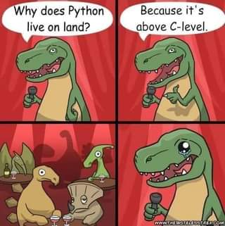
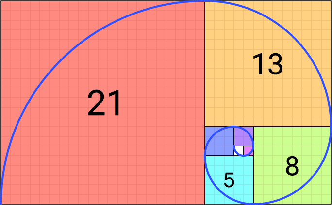

graph TD;
A{Condition 1?} -->|Yes| B[Block 1: Action if Condition 1 is true]
A -->|No| C{Condition 2?}
C -->|Yes| D[Block 2: Action if Condition 2 is true]
C -->|No| E[Block 3: Action if both are false]
4 Flow Control in Python
4.1 Python vs. C

4.2 Definition of Control Flow
- Control flow is the order in which statements and instructions are executed in a program
- Control flow can be affected by decision-making statements, loops, and function calls.

4.3 Indentation in Python
Code blocks are a group of statements that are executed together.
In Python, indentation is used to define blocks of code.
Python uses whitespaces (spaces or tabs) at the beginning of a line to determine the indentation level of the line.
The amount of indentation is flexible, but it must be consistent throughout that block.
Generally, four spaces are used for each level of indentation.
Example:
if True:
print("This is within the if block") # Indented with four spaces
if True:
print("This is within the nested if block") # Indented with eight spaces
print("This is outside the if block") # No indentation4.4 Conditional Flow Control
- if-statement
The if statement is used for decision-making in Python programming. It tests a condition and executes a block of code only if that condition evaluates to True. If the condition is False, the block of code is skipped.
if expression:
statement(s)- if-else-statement
The if statement can be combined with elif and else clauses to control the flow of execution in the program, allowing for the implementation of more complex logical structures.
if condition1:
# Code to execute if condition1 is True (Execute Block1)
elif condition2:
# Code to execute if condition2 is True (Execute Block2)
else:
# Code to execute if no conditions are True (Execute Block3)4.5 Example : Age Category
Objective: Categorize life stages by age.
age = 20
if age < 13:
print("Child")
elif age < 20:
print("Teenager")
else:
print("Adult")Adult4.6 Loops in Python
graph TB;
A[Start Loop<br/>for item in iterable:] --> B[Execute Block]
B --> A
A -->|No More Items| C[End Loop]
Loops in Python are used to execute a block of code repeatedly. Python provides two types of loops: for and while.
4.7 for Loops
A for loop is used to iterate over a sequence (e.g., a list, tuple, string, or range) and execute a block of code for each item in the sequence.
for element in sequence:
statement(s)- Example 1
for chr in "HELLO":
print(chr)H
E
L
L
O- Example 2
for fruit in ["Apple", "Orange", "Banana"]:
print(fruit)Apple
Orange
Banana- Example 3
for i in range(10):
print(i)0
1
2
3
4
5
6
7
8
94.8 while Loops
A while loop, on the other hand, continues to execute a block of code as long as a given condition evaluates to True.
while condition:
statement(s)- Example
index = 0
fruits = ["Apple", "Orange", "Banana"]
while index < 2:
print(index, fruits[index])
index += 10 Apple
1 Orange4.9 Controlling Loop Execution
break: Immediately exits a loop.
for i in range(10):
if i == 5:
break # Exit the loop when i is 5.
print(i)0
1
2
3
4continue: Skips the remainder of the loop’s body and immediately proceeds with the next iteration.
for i in range(10):
if i % 2 == 0:
continue # Skip even numbers.
print(i)1
3
5
7
9pass: Acts as a placeholder, allowing for the definition of empty control structures.
for i in range(10):
pass # Placeholder for future code.4.10 Python List Comprehensions
List Comprehensions in Python are a concise and efficient way to create lists. They allow for the construction of a new list by applying an expression to each item in an iterable, optionally filtering items to include only those that meet a condition.
4.10.1 Syntax
The basic syntax of a list comprehension is:
[expression for item in iterable if condition]where:
- expression is the current item in the iteration, but it could also be any other valid expression that depends on it.
- item is the variable that takes the value of the item inside the iterable in each iteration.
- iterable is a sequence, collection, or an object that can be iterated over.
- condition is an optional part. If specified, the expression will only be applied to items that meet the condition.
4.11 List Comprehensions - Example 1
squares = [x**2 for x in range(10)]
squares[0, 1, 4, 9, 16, 25, 36, 49, 64, 81]4.12 List Comprehensions - Example 2
squares_even = [x**2 for x in range(1, 11) if x % 2 == 0]
squares_even[4, 16, 36, 64, 100]4.13 Error Handling in Python
Error handling is a critical aspect of writing robust Python programs. Python provides the try and except blocks to catch and handle exceptions, preventing the program from terminating unexpectedly.
4.13.1 Handling Division by Zero
A common error in programming is division by zero, which occurs when a number is divided by zero. Python raises a ZeroDivisionError exception in such cases.
4.13.2 Syntax
The basic syntax for handling exceptions in Python is:
numerator = 10
denominator = 0
try:
# Code block where exception can occur
result = numerator / denominator
except ZeroDivisionError:
# Code to execute if there is a ZeroDivisionError
print("Cannot divide by zero!")Cannot divide by zero!4.14 Exercise: Fibonacci Sequence

Write a program that generates the first 20 numbers in the Fibonacci sequence.
Hints:
- The Fibonacci sequence is a sequence of numbers where each number is the sum of the two preceding numbers.
- The first two numbers in the sequence are 0 and 1.
- Use a for loop to generate the sequence.
Example output: 0, 1, 1, 2, 3, 5, 8, 13, 21, 34, 55, 89, 144, 233, 377, 610, 987, 1597, 2584, 4181
Solution
# Initialize the first two numbers
a = 0
b = 1
# Print the first two numbers
print(a, end=" ")
print(b, end=" ")
# Generate the next 18 numbers
for _ in range(18):
next_number = a + b
print(next_number, end=" ")
a = b
b = next_number0 1 1 2 3 5 8 13 21 34 55 89 144 233 377 610 987 1597 2584 4181